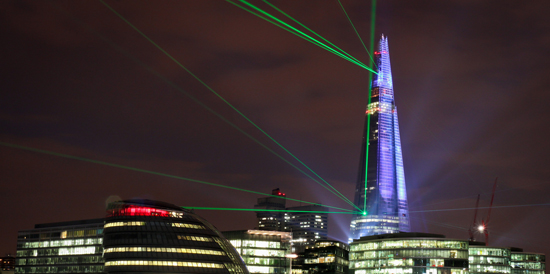
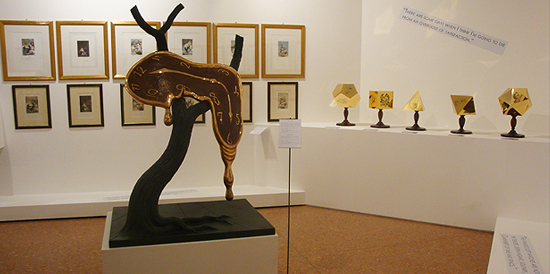
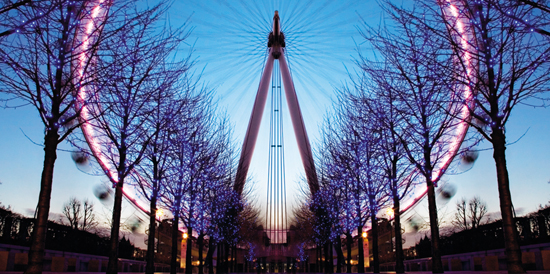
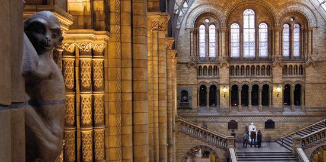
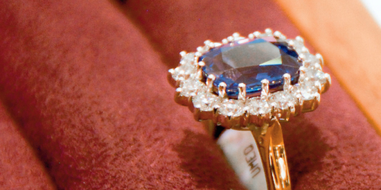
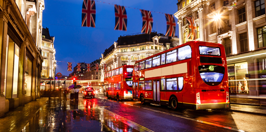

汉普郡国家汽车博物馆The National Motor Museum
英国汽车设计艺术的杰出代表，更是英伦精神的缩影，可以由博物馆专业导游和KOL带观众深入了解捷豹品牌的精髓、演变和传承。博物馆位于英国英格兰东南部的汉普郡，是永恒的汽车艺术加油站，离伦敦1.5小时车程。
碎片大厦The Shard
碎片大厦，又称夏德塔。是位于英国伦敦的伦敦桥站西南侧的摩天大楼，高309.6米，为欧盟最高建筑物，欧洲第二高建筑物，伦敦天际线上的新宠儿。碎片大厦的外墙自下而上由粗变细，最终形成一个晶莹剔透的玻璃“金字塔”；塔尖的玻璃板互不接触，形成一个“让大厦在天空呼吸”的开放空间。这种独一无二的设计理念与捷豹XF的外观设计、流线型车身线条和极富视觉冲击力的全新前脸造型不谋而合；而且捷豹XF可倾斜开启，且一键打开的电动天窗，也能让您在驰骋过程中酣畅淋漓地“自由呼吸”。
达利作品纪念馆Dali Universe
位于南岸区中心的达利作品纪念馆最具超现实主义风格，里面的艺术氛围给人一种迷幻般梦境感受。纪念馆占地3000平方米，展品极具创新精神，常年展出萨尔瓦多·达利令人讶异的作品。萨尔瓦多·达利喜欢描绘梦境中的景象，以一种稀奇古怪、不合情理的方式，将普通物像扭曲或者变形。达利对这些物像的描绘精细入微，几乎达到毫发不差的逼真程度，通常将它们放在十分荒凉但阳光明媚的风景里。在这些谜语一般的意象中，最有名的大概是“记忆的永恒”。
伦敦眼摩天轮London Eye
伦敦眼于2000年第一次对公众开放时，雄踞世界上最大的观光摩天轮，高出泰晤士河面135米。如今，全世界的城市都在复制伦敦这个未来派的巨大轮子，但它终究是原创。32座密闭的观景舱每个可搭载25名乘客，转完一圈需要半小时。形似小船的观景舱提供了伦敦中心上空毫无遮拦的远眺视野，从议会大厦和威斯敏斯特到远处金融城的尖塔以及巴特西发电站的烟囱，所有景观一览无余。最初伦敦眼只计划当作临时的展品，但它所造成的轰动效应使之成为了一个永久性建筑。后来，它甚至渗入了大众文化，出现在《哈利 · 波特和凤凰社》中，并在《神秘博士》（Dr Who）一集中充当阴险的Nestene Consciousness所使用的通信设备。“伦敦眼”实在是个疯狂的城市创举。
大英博物馆British Museum
博物馆一定散发着霉味？英国最大的博物馆馆长们的工作卓有成效，成功地使这个历经几个世纪的历史宝库重获新生。大英博物馆始建于1753年，最早是汉斯 · 斯隆爵士（Sir HansSloane）的个人收藏馆，在乔治时代经历了跨越式发展。2000年，诺曼 · 福斯特爵士为其中央庭院覆盖了华丽的几何天棚。在大英博物馆里，你可以看到以下历史奇迹：让考古学家们破解了埃及象形文字的罗塞塔石碑（Rosetta Stone）；以及颇具争议的，由驻奥斯曼帝国的英国大使额尔金从雅典卫城掠来的帕特农神庙大理石雕（Elgin Marbles）。62号和63号展厅的埃及木乃伊收藏令人叹为观止，但也别小觑了像米尔登霍尔宝藏（Mildenhall Treasure）那样的英格兰古迹。博物馆大中庭的中间部分为建于1857年的阅览室，许多赫赫有名的人物曾在此流连，包括马克思、甘地、王尔德、伍尔芙、叶慈、萧伯纳等。
王室御用首饰和银器供应商Royal Warrents Mappin & Webb
想拥有一件和英国王室一模一样的首饰或银器？这不是奢望，到Mappin & Webb来吧。1774年，Jonathan Mappin在谢菲尔德开办了一家银器铺，因其制造的银器品质卓越而声誉鹊起。1849年，第一家银器店在伦敦开张。1858年John Newton Mappin和其妹夫George Webb一起组建了Mappin & Webb公司。1897年，Mappin & Webb获得了王室御用认证。直至今日，它依旧是女王和查尔斯王子的御用银器制造商。位于摄政街上的Mappin & Webb门店格调高雅，你可尽情挑选精美绝伦的珠宝、银器、手表和玻璃器皿，记得带足银子！
双层巴士Double-decker bus
红色双层巴士，这种体型巨大的红色双层巴士由伦敦运输局设计，1956年投入使用后很快就成为了伦敦的一项标志。它最著名的特色是一个敞开式平台，让乘客能够在运行途中随时上下车。最后一辆原产红色双层巴士在2005年退役，但两条怀旧旅游路线（伦敦巴士9号及15号线）仍保留了最初的车辆。在广受欢迎的原产车型的基础上，新版本的设计进行了升级，并于2012年投入使用。